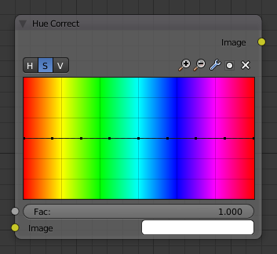

Вузол «Корекція Відтінку» -- Hue Correct Node¶
Вузол «Корекція Відтінку» -- Hue Correct Node здатний коригувати Відтінок -- Hue, Насиченість -- Saturation, Value -- Значення світлості за допомогою увідної кривої.

Вузол «Корекція Відтінку» -- Hue Correct Node.
Уводи -- Inputs¶
- Фактор -- Factor
- Керує величиною впливу цього вузла на вивідне результатне зображення.
- Зображення -- Image
- Стандартний увід зображення.
Властивості¶
- Рівень -- Level
- H (Hue -- Відтінок), S (Saturation - Насиченість), V (Value -- Значення світлості)
- Крива -- Curve
- Про керувальники кривої дивіться: Віджет «Крива» -- Curve widget. Стандартно, ця крива є прямою лінією, що означає, що будь-які зміни відсутні. Цей спектр дозволяє вам підвищувати або понижувати рівні HSV для кожного діапазону кольорів пікселів. Для зміни рівня H, S чи V переміщуйте точки кривої уверх або вниз. Пікселі за допомогою кожної точки значень відтінку у горизонтальні позиції графа змінюватимуться залежно від форми кривої.
Виводи -- Outputs¶
- Зображення -- Image
- Стандартний вивід зображення.